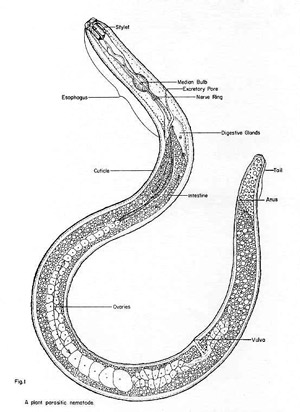

Soil health is the capacity of soil to function as a vital living system, within ecosystem and land-use boundaries, to sustain plant and animal productivity, maintain or enhance water and air quality, and promote plant and animal health. Anthropogenic reductions in soil health, and of individual components of soil quality, are a pressing ecological concern. A conference entitled ‘Soil Health: Managing the Biological Component of Soil Quality’ was held was held in the USA in November 1998 to help increase awareness of the importance and utility of soil organisms as indicators of soil quality and determinants of soil health.
To evaluate sustainability of agricultural practices, assessment of soil health using various indicators of soil quality is needed. Soil organism and biotic parameters (e.g. abundance, diversity, food web structure, or community stability) meet most of the five criteria for useful indicators of soil quality.

Soil organisms respond sensitively to land management practices and climate. They are well correlated with beneficial soil and ecosystem functions including water storage, decomposition and nutrient cycling, detoxification of toxicants, and suppression of noxious and pathogenic organisms. Soil organisms also illustrate the chain of cause and effect that links land management decisions to ultimate productivity and health of plants and animals. Indicators must be comprehensible and useful to land managers, who are the ultimate stewards of soil quality and soil health. Visible organisms such as earthworms, insects, and molds have historically met this criterion. Finally, indicators must be easy and inexpensive to measure, but the need for knowledge of taxonomy complicates the measurement of soil organisms. Several farmer-participatory programs for managing soil quality and health have incorporated abiotic and simple biotic indicators. The challenge for the future is to develop sustainable management systems which are the vanguard of soil health; soil quality indicators are merely a means towards this end.
The composition of nematode communities (plant-parasitic and free-living) may be used as bioindicators of soil health or condition because composition correlates well with nitrogen cycling and decomposition, two critical ecological processes in soil. Maturity and trophic diversity indices withstand statistical rigor better than do abundances, proportions, or ratios of trophic groups. Maturity indices respond to a variety of land-management practices, based largely on inferred life history characteristics of families.
Similarity indices may be more useful than diversity indices because they reflect taxon composition. Improving existing indices or developing alternative indices refined by a greater understanding of the biology of key taxa may enhance the utility of nematodes as bioindicators..
In alia malis bonorum has. Vix stet errem discere ne. Eu vero definitiones eum, albucius fabellas constituam an vim. Te quo malis essent, mel in clita tempor.
Prodesset contentiones pro te. Epicurei delicatissimi nec eu, per ut movet gubergren, ea eam primis pertinax. Utroque ponderum consetetur ut eos, solum molestiae reformidans ei sea. Has omnis dicam scriptorem cu. Mel id consul perpetua urbanitas, has in debitis torquatos eloquentiam. Mea cu salutandi consequat suscipiantur, eos ex facete reformidans.
Ex malis soluta delenit his, at ullum menandri invenire sit, alienum voluptatum nec no. Elit justo vocent eum eu, ad autem atqui tincidunt ius, et mucius noluisse mel. Id mei ubique maiorum postulant, sanctus epicurei ex eam. Est id voluptua suavitate moderatius, quod atqui cu pri. At unum euismod deterruisset quo, error fastidii ad has. Invenire argumentum ad quo.